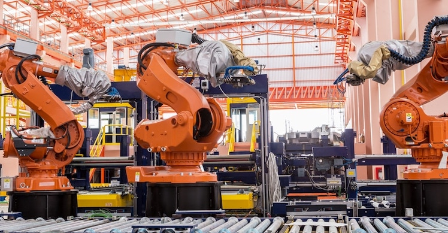
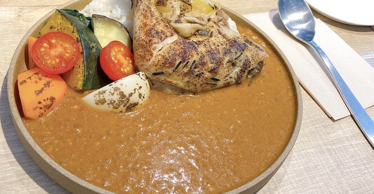
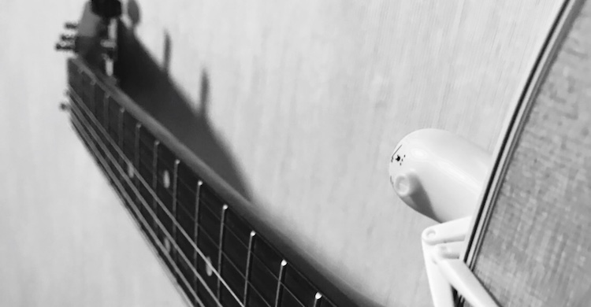

所属
機械工学科に所属しています。
普段はロボットや自動車など機械について勉強しています。

好きな食べ物 "TOP3"
- 牛丼
- カレー
- 鯛

趣味
ギターと自転車です。
最近、自転車のフレームをオーダーメイドで作りました。
音楽は、昔の洋楽（特にイギリス）が好きです。
その他
PCについて
主にMacです。大学やその他場所でWidows、Linux(Ubuntu)も使用します。
プログラミングについて
普段はPythonやC(C++)を使っています。RubyやSQL、HTML+CSSなどの他言語も少しはできます。
長所&短所について
長所：知らないことを調べ学び、新しい発見をすることが好きなことです。
短所：計画や考えなしで思い切って行動してしまうことです。
写真は最近行った代々木にある"michiru by plein UEHARA"さんのものです。美味しかったです。